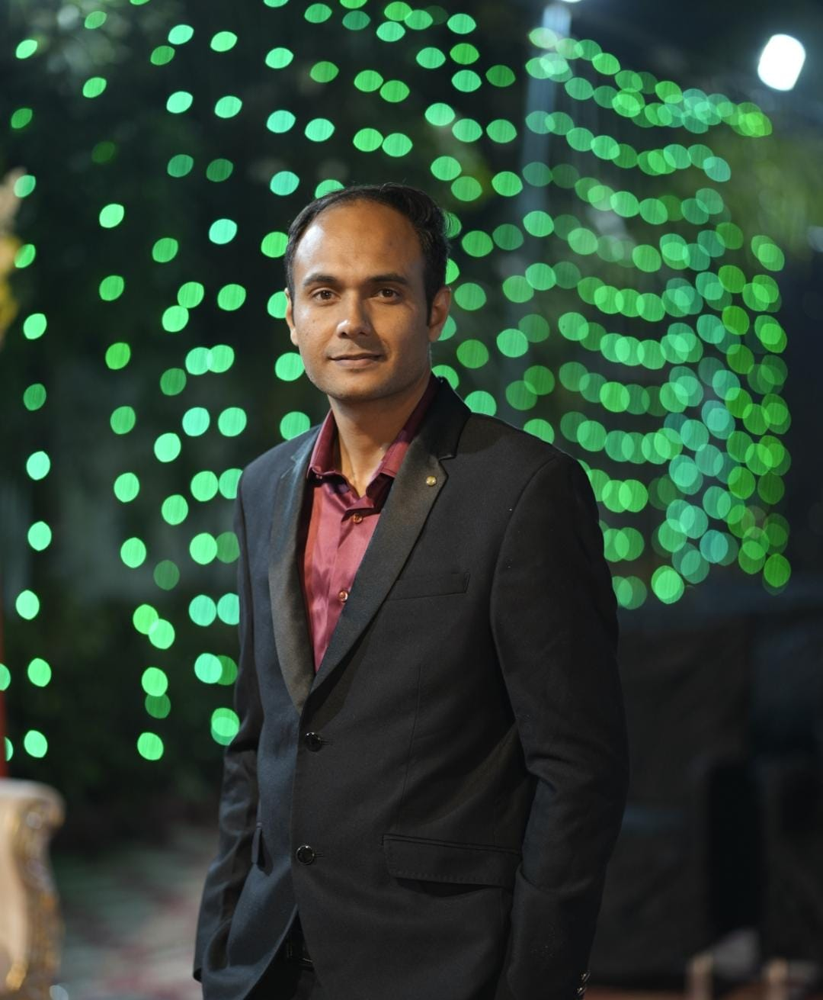
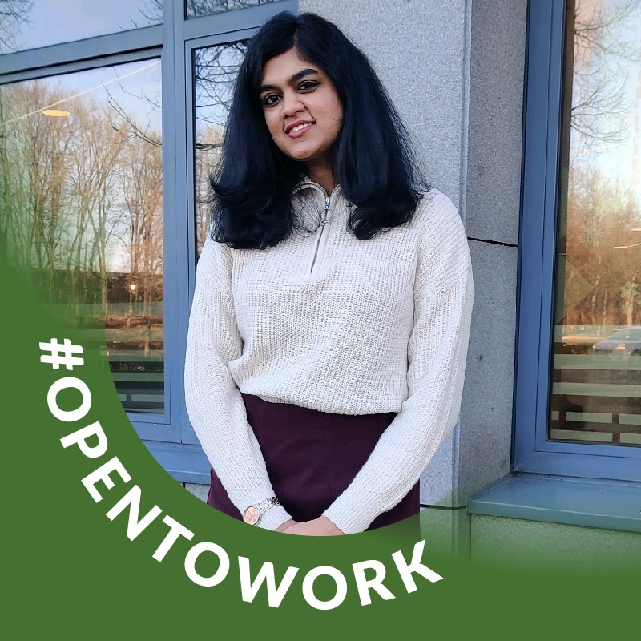
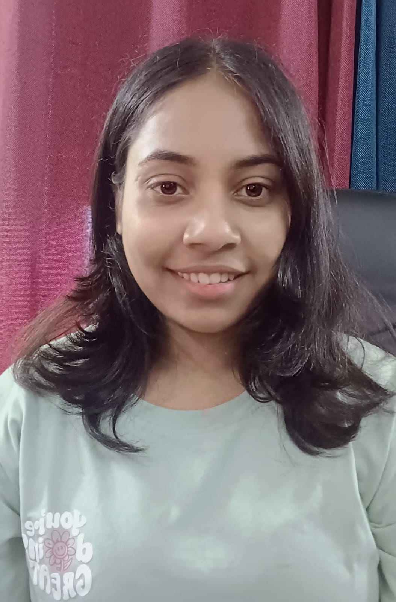

<div class="container team-container">
  <!-- <app-header></app-header> -->
  <div class="team-content">
    <h2>Our Team</h2>
    <div class="team-member">
      <h2>Avik Baheti</h2>
      
      <p>Avik Baheti is a dynamic IT professional with 14 years of experience in
        application development, support, and management. Known for adaptability
        and innovation, he thrives in fast-paced environments. With strong
        communication and leadership skills, he consistently delivers successful
        outcomes.</p>
      <a href="https://www.linkedin.com/in/avik-baheti-b5728a186/"
        target="_blank" class="social-link">
        <i class="fab fa-linkedin"></i>
      </a>
    </div>

    <div class="team-member">
      <h2>Swathi K Rao</h2>
      
      <p>Swathi Rao, Co-founder at Finch Products & Services, is an experienced
        developer with expertise in UI/UX design, backend development, and team
        leadership. She has worked with organizations like TCS, Sophos, Amex,
        and J&J. Passionate about learning and community contributions, Swathi
        excels in problem-solving, communication, and collaboration.</p>
      <a href="https://www.linkedin.com/in/swathi-rao-k-b4765032/"
        target="_blank" class="social-link">
        <i class="fab fa-linkedin"></i>
      </a>
    </div>

    <div class="team-member">
      <h2>Mohit Nakhade</h2>
      
      <p>Mohit Nikhade is a versatile professional specializing in Data Science,
        Machine Learning, and Deep Learning. With expertise in Gen AI and data
        analysis, he delivers impactful insights and solutions. He is also
        skilled in full-stack web development, combining technical depth with
        innovation.</p>
      <a href="https://www.linkedin.com/in/mohit-nikhade/" target="_blank"
        class="social-link">
        <i class="fab fa-linkedin"></i>
      </a>

    </div>

    <div class="team-member">
      <h2>Maithri K. Rao</h2>
      
      <p>Maithri K. Rao is currently pursuing a Master's in Computer Science
        from Saarland University, Germany, and working on an NLP project at
        DFKI. She previously worked at IDnow GmbH in Machine Learning for a year
        and at Tata Consultancy Services as an Assistant System Engineer for two
        years. Maithri is skilled in Java, Spring framework, and Datamart
        development.</p>
      <a href="https://www.linkedin.com/in/maithri-rao-10365a136/"
        target="_blank" class="social-link">
        <i class="fab fa-linkedin"></i>
      </a>
    </div>

    <div class="team-member">
      <h2>Anjali Vishwakarma</h2>
      
      <p>A Software Engineer with expertise in JavaScript (React.js, Node.js),
        Python, C++, and API development. Proficient in database management
        (SQL, MongoDB), real-time communication (Socket.IO), and Linux.
        Recognized for strong communication, problem-solving abilities, and
        collaborative teamwork. Currently a Software Engineer Trainee, focused
        on building scalable solutions, optimizing workflows, and exploring
        opportunities in Gen AI.</p>
      <a href="https://www.linkedin.com/in/anjali-vishwakarma-524170212/"
        target="_blank" class="social-link">
        <i class="fab fa-linkedin"></i>
      </a>
    </div>

    <div class="back-button">
      <a href="/">Back to Home</a>
    </div>
  </div>
</div>
